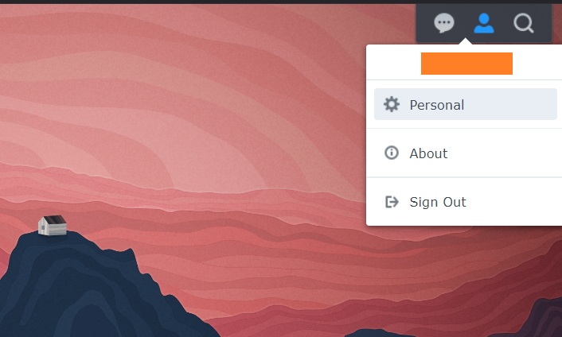
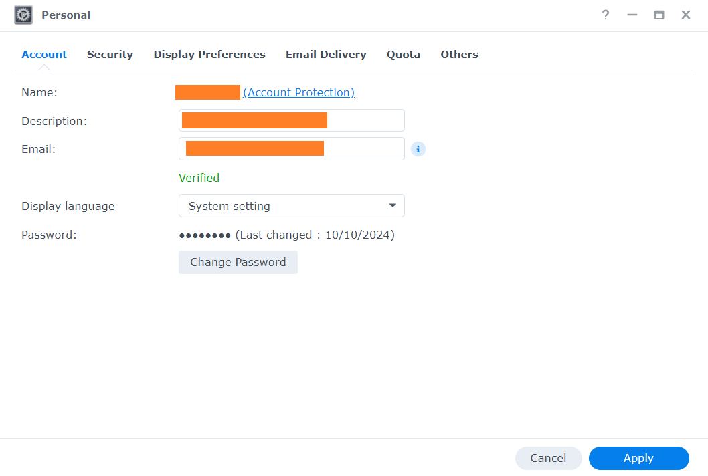
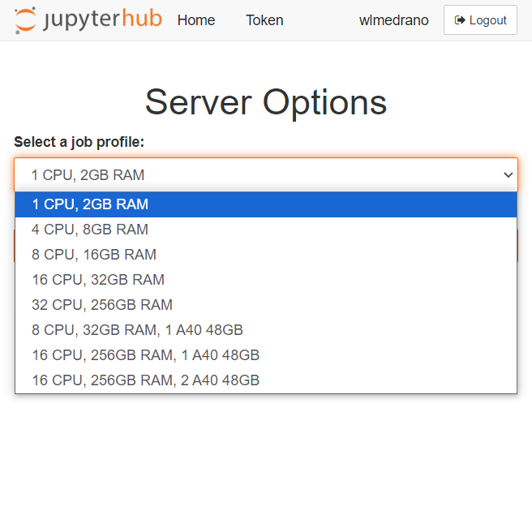

Image credits: Diego Fernandez at Unplash
[EN] Introduction to marbec-data and marbec-gpu
What are they? Are they the same?
No. marbec-data and marbec-gpu compose a High-performance computing (HPC) system. Basically, it is like having a supercomputer at your disposal to solve complex problems. Imagine that instead of having a single processor (Intel/AMD) working in conjunction with the RAM and storage space of your laptop, you have several computers linked together combining their power (processors, RAM and storage) to run complex processes. This is how HPC works: it uses multiple computers working together to solve very large computations much faster than a single computer could. Within Marbec, marbec-data is a Network File System (NFS) and marbec-gpu is a computing cluster.
An NFS is a network protocol that allows multiple devices connected to a network to share files and directories. This means that researchers can store their data, codes and outputs as if they were on their own local computer, but with the advantage of having a centralized backup and the ability to access their files from any machine connected to the cluster. In very simple words and going back to the analogy with your laptop, marbec-data takes the place of storage (i.e. hard disk). On the other hand, a compute cluster is, in essence, a set of interconnected processors working in a coordinated manner to execute complex computational processes. Within the analogy of your current PC, marbec-gpu equals: your main processor (CPU), your graphics processor (GPU), general RAM and video RAM.
To put it in raw numbers, the current (October 2024) potential of marbec-gpu is:
- CPU: 4 x [Intel(R) Xeon(R) Platinum 8380 @2.30GHz, 40 physical cores, 80 logical cores]
- RAM: 1.5 TB DDR4
- GPU: 2 x [NVIDIA A40, 48 GB ECC GDDR6 RAM, 10’752 CUDA cores, 336 tensor cores, 696 GB/s bandwidth]
Of course, with these simplifications we are leaving out some important details, but we will go into more detail later as we need them.
How to access marbec-data?
This will depend on what we need to do. If we just want to take a quick look at the files and review aspects of our account, we can open a browser window and go to https://marbec-data.ird.fr/. This will open a login interface where you just need to enter your credentials.

Once inside, we will see a sort of desktop where we will see a couple of icons to access our shared directories and general documentation on the use of the platform.

We will start, however, by clicking on the user options icon (the one that looks like a little person) at the top right of the desktop and selecting the Personal option.

A small window will open where we will be able to change our password (it is recommended that this is the FIRST thing we do if it is the first time we access), the interface language or desktop image and colors (in the Display Preferences tab).

Likewise, in the Quota tab we will be able to verify the storage limit assigned to our user and what has been used so far in each of the folders associated to our user. This is a simple and graphic way to visualize the available space we have left. If at any time we need more space, we just need to request it by e-mail to the marbec-data administrators.

If at any time during the execution of a process the allocated quota limit is reached, the system will block any attempt to save files and this will result in the unplanned termination of the process or errors related to disk write problems.
How to access marbec-gpu?
The easiest way to access marbec-gpu is through a browser using the JupyterLab environment. To do this, just open a browser (Chrome, Firefox, Brave, etc.) window and go to https://marbec-gpu.ird.fr/. A window will appear to enter our credentials (NOTE: They are not necessarily the same as those of marbec-data) and then click on the Start my server button. Next, a drop-down menu will appear where we will be able to choose different default configurations of computing power for our session.
Although we indicated a moment ago that marbec-gpu has a good amount of CPUs, GPUs and RAM, this represents 100% of its absolute power and marbec-gpu is a shared service, so it is not possible for a single user to monopolize 100% of its capacity. That is why the first choice will consist of deciding what is the power we require for our process. For example, if we want to run an automated process of downloading satellite information, it will be enough to reserve 1 CPU and 2GB of RAM. On the other hand, if our script is only configured (and tested) to use CPU cores, it will not be necessary to reserve those configurations that include GPU. Remember that if you select a very powerful option that you will not take advantage of, it will not be available for someone else who might really need it (choose wisely).

After selecting (and reserving) the resources for our session and clicking Start, a window with the JupyterLab Launcher will appear. In it, we will be able to see the different preinstalled and available applications. The main one will be the Terminal, which is the one we will use to launch (execute) our processes (scripts).

We will start by opening a Terminal window (by clicking on the corresponding icon) and the first command we will execute will be to change the password. To do this, we will execute the command passwd (and Enter). Next, we will be asked to type our current password and the new one. WARNING: by default and for security, during the password change process NO cursor is shown while typing, so it might seem that our keyboard is not working, but this is not the case. You can type normally.
It is very important to define strong passwords (alphanumeric with symbols and uppercase-case) and preferably different passwords for the login in marbec-data and marbec-gpu. On the other hand, the JupyterLab environment DOES allow the use of classic shortcuts like Ctrl+C-Ctrl+V (or Cmd+C-Cmd+V in MacOS) to copy-paste character strings, so it is possible to use them during the password change process with the passwd command.
[ES] Introducción a marbec-data y marbec-gpu
¿Qué son? ¿Son lo mismo?
No. marbec-data y marbec-gpu componen un Sistema de cómputo de alto rendimiento (High-performance computing). (Muy) Básicamente, es como tener una supercomputadora a tu disposición para resolver problemas complejos. Imagina que en lugar de tener un único procesador (Intel/AMD) trabajando en conjunto con la RAM y el espacio de almacenamiento de únicamente tu computadora (e.g. tu laptop), tienes a varias computadoras unidas entre sí combinando su potencia (procesadores, RAM y almacenamiento) para ejecutar los un proceso complejo. Así es como funciona un HPC: utiliza múltiples computadoras trabajando juntas para resolver cálculos muy grandes mucho más rápido de lo que una sola computadora podría hacerlo. Dentro de Marbec, marbec-data es un sistema de almacenamiento distribuido (Network File System, NFS) y marbec-gpues un clúster de cómputo.
Un NFS es un protocolo de red que permite a múltiples dispositivos conectados a una red compartir archivos y directorios. Esto significa que los investigadores pueden almacenar sus datos, códigos y resultados como si estuvieran en su propio equipo local, pero con la ventaja de tener una copia de seguridad centralizada y la posibilidad de acceder a sus archivos desde cualquier máquina conectada al clúster. En palabras muy simples y volviendo a la analogía con tu actual PC, marbec-data hace las veces del almacenamiento (i.e. del disco duro). Por otro lado, un clúster de cómputo es, en esencia, un conjunto de procesadores interconectados que trabajan de forma coordinada para ejecutar procesos computacionales complejos. Dentro de la analogía de tu PC actual, marbec-gpu equivale a: tu procesador principal (CPU), tu procesador de gráficos (GPU), la RAM general y la de vídeo.
Para ponerlo en números brutos, la potencial actual (octubre 2024) de marbec-gpu es de:
- CPU: 4 x [Intel(R) Xeon(R) Platinum 8380 @2.30GHz, 40 physical cores, 80 logical cores]
- RAM: 1.5 TB DDR4
- GPU: 2 x [NVIDIA A40, 48 GB ECC GDDR6 RAM, 10’752 CUDA cores, 336 tensor cores, 696 GB/s bandwidth]
Por supuesto, con estas simplificaciones estamos obviando algunos detalles importantes, pero que iremos detallando posteriormente conforme los necesitemos.
¿Cómo acceder a marbec-data?
Esto dependerá de lo que necesitemos hacer. Si únicamente queremos echar un vistazo rápido a los archivos y revisar aspectos de nuestra cuenta, bastará con abrir una ventana de navegador e ir a la dirección https://marbec-data.ird.fr/. Se abrirá una interfaz de logueo en donde bastará con colocar nuestras credenciales de acceso.
Una vez adentro, veremos una suerte de escritorio en donde se mostrará un par de íconos de acceso a nuestros directorios compartidos y a documentación general de uso de la plataforma.
Empezaremos, sin embargo, con un click sobre el ícono de opciones de usuario (el que parece una personita) que se halla arriba a la derecha del escritorio y seleccionaremos la opción Personal.
Se abrirá una pequeña ventana en donde podremos cambiar nuestra contraseña (se recomienda que esto sea lo PRIMERO que hagamos si es la primera vez que accedemos), el idioma de la interfaz o la imagen de escritorio y los colores (en la pestañana Display Preferences).
Así mismo, en la pestaña Quota podremos verificar el límite de almacenamiento asignado a nuestro usuario y lo utilizado hasta el momento en cada una de las carpetas asociadas a nuestro usuario. Esta es una manera sencilla y gráfica de visualizar el espacio disponible que nos queda. Si en algún momento necesitamos de más espacio, basta con solicitarlo por e-mail a los administradores de marbec-data.
Si en algún momento durante la ejecución de un proceso se alcanza el límite de la cuota asignada, el sistema bloqueará cualquier intento de guardado de archivos y esto dará lugar a la finalización imprevista del proceso o a errores relacionados a problemas de escritura en disco.
¿Cómo acceder a marbec-gpu?
La manera más sencilla de acceder a marbec-gpu es a través de un navegador utilizando el entorno de JupyterLab. Para esto, bastará con abrir una ventana de navegador (Chrome, Firefox, Brave, etc.) e ir a la dirección https://marbec-gpu.ird.fr/. Se mostrará una ventana para ingresar nuestras credenciales (OJO: No necesariamente son las mismas que las de marbec-data) y posteriormente daremos click al botón de Start my server. A continuación, se mostrará un menú desplegable en donde podremos elegir diferentes configuraciones predeterminadas de potencia de cálculo para nuestra sesión.
Si bien, hace un momento indicamos que marbec-gpu dispone de una buena cantidad CPUs, GPUs y RAM, eso representa el 100% de su potencia absoluta y marbec-gpu es un servicio compartido, por lo que no es posible que un solo usuario pueda acaparar el 100% de su capacidad. Es por ello que la primera elección consistirá en decidir cuál es la potencia que requerimos para nuestro proceso. Por ejemplo, si lo que deseamos es ejecutar un proceso de automatizado de descarga de información satelital, bastará con reservar 1 CPU y 2GB de RAM. De otro modo, si nuestro script solo está configurado (y probado) para utilizar núcleos de CPU, no es necesario reservar aquellas configuraciones que incluyan GPU. Recuerda que si seleccionas una opción muy potente que no aprovecharás, no estará disponible para alguien más que sí podría necesitarla realmente (elige sabiamente).
Luego de haber seleccionado (y reservado) los recursos para nuestra sesión y haberle dado click a Start, se nos mostrará una ventana con el Launcher de JupyterLab. En ella, podremos observar los distintos aplicativos preinstalados y disponibles. El principal de todos será el de Terminal, que es con el que lanzaremos (ejecutaremos) nuestros procesos (scripts).
Empezaremos por abrir una ventana de Terminal (dándole click al ícono correspondiente) y el primer comando que ejecutaremos será el de cambio de contraseña. Para ello, ejecutaremos el comando passwd (y Enter). A continuación, nos solicitará que escribamos nuestra contraseña actual y la nueva. OJO: por defecto y por seguridad, durante el proceso de cambio de contraseña NO se muestra ningún cursor mientras se escribe, así que podría parecer que nuestro teclado no está funcionando, pero esto no es así. Usted escriba con normalidad.
Es muy importante que se defina contraseñas seguras (alfanuméricas con símbolos y mayúsculas-minúsculas) y de preferencia distintas para el inicio de sesión en marbec-data y marbec-gpu. Por otro lado, el entorno de JupyterLab SÍ permite el uso de shortcuts clásicos como Ctrl+C-Ctrl+V (o Cmd+C-Cmd+V en MacOS) para copiar-pegar cadenas de carcateres, por lo que es posible utilizarlos durante el proceso de cambio de contraseña con el comando passwd.